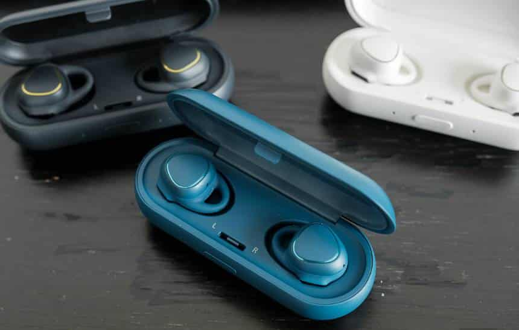
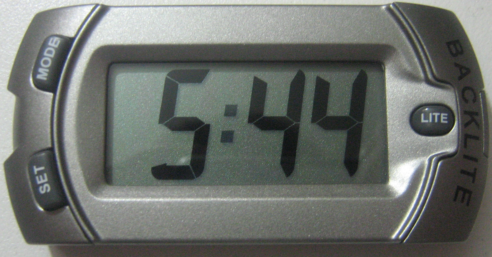
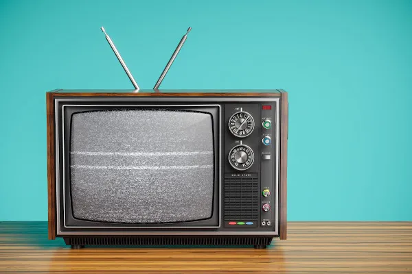

Meu primeiro post
Por: Bruno Henrique
Boas-vindas ao meu novo blog! Aqui vou compartilhar dicas de programação e curiosidades da área de tecnologia.
Vou compartilhar conhecimentos sobre tecnologia
Por: Bruno Henrique
Boas-vindas ao meu novo blog! Aqui vou compartilhar dicas de programação e curiosidades da área de tecnologia.

Por: Bruno Henrique
O primeiro fone de ouvido (headset) Bluetooth foi revelado em 1999 durante a feira COMDEX, onde ganhou um prêmio de inovação, e lançado comercialmente em 2000

Por: Bruno Henrique
O primeiro relógio digital de pulso totalmente eletrônico do mundo surgiu em 1970, com o lançamento do modelo Pulsar pela Hamilton Watch Company.

Por: Bruno Henrique
A televisão surgiu no Brasil em 18 de setembro de 1950, com a inauguração da TV Tupi em São Paulo.